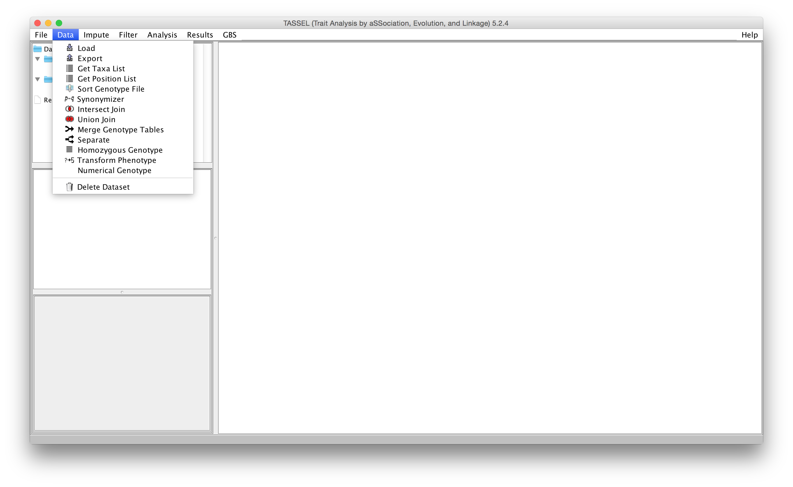
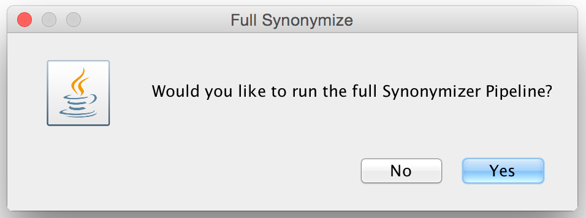
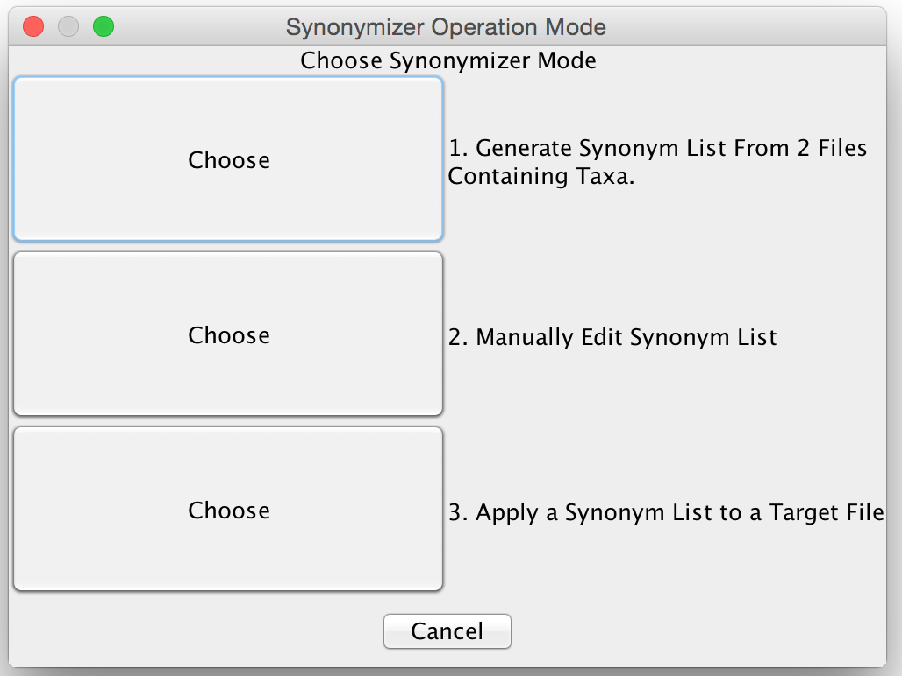
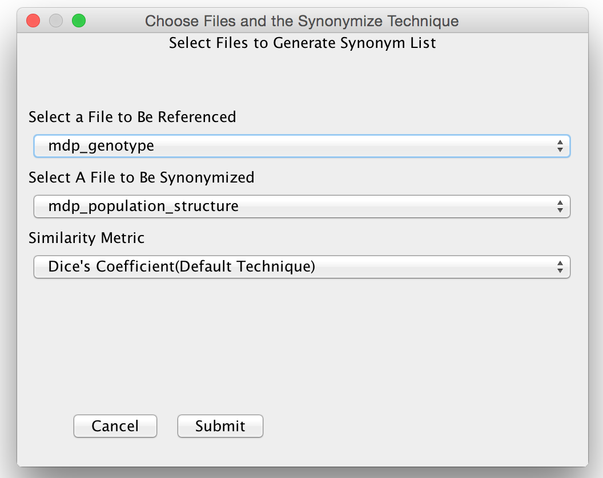
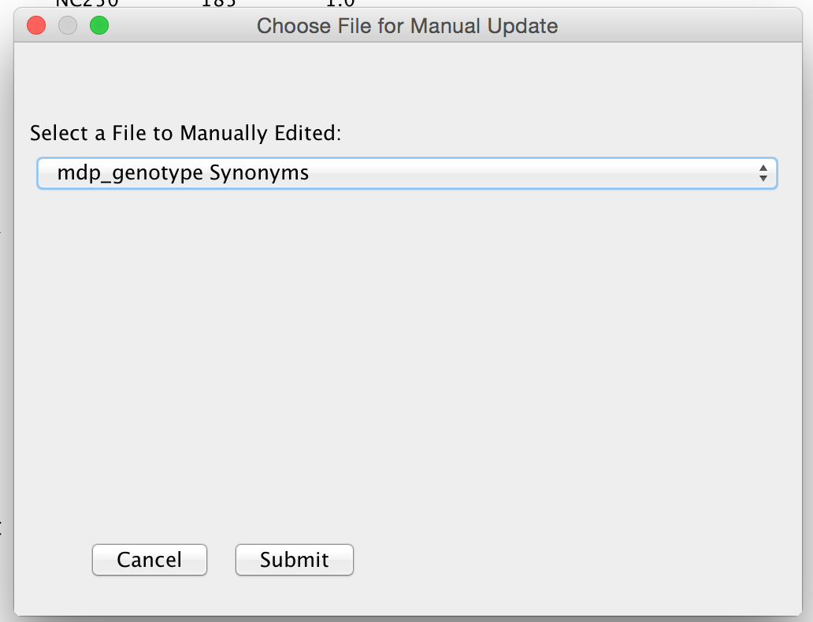
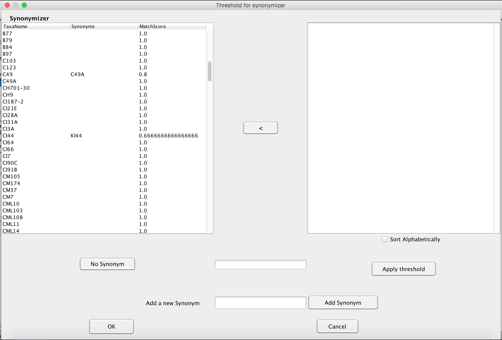
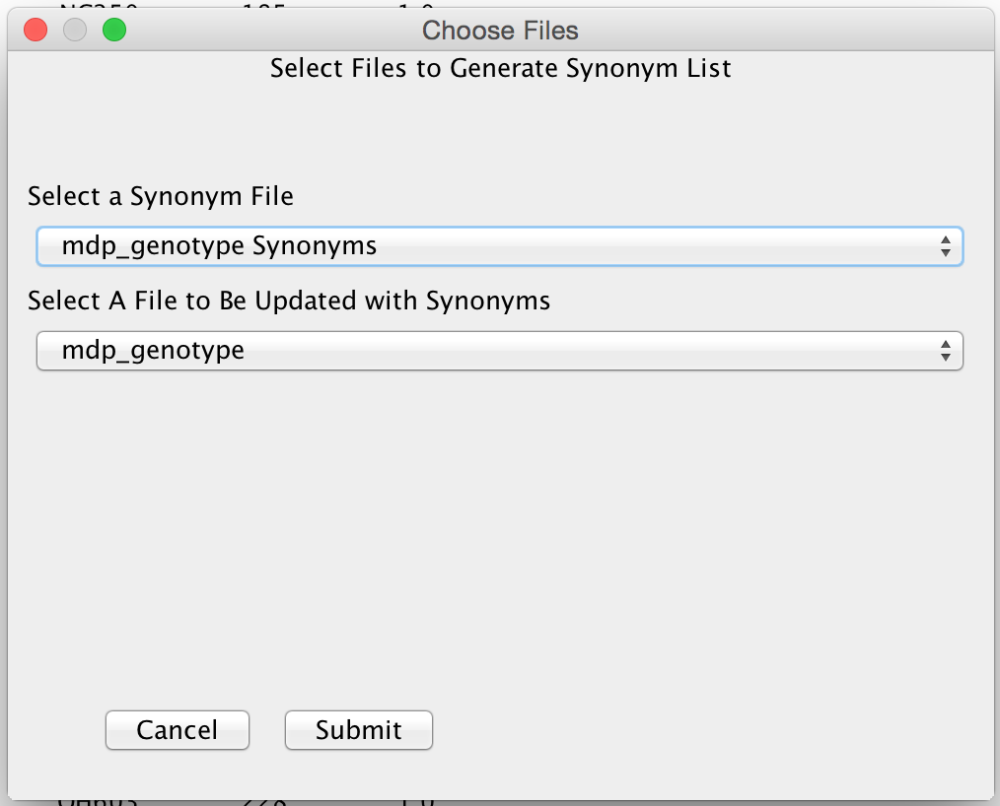

Synonymizer (Synonymize Taxa Names)¶
This plugin attempts to match similar taxa names to permit the joining of data sets.
The join functions that generate fused data sets work by matching taxa names. Consequently, if multiple names exist for a given taxon (an added suffix, alternative spellings, different naming conventions, etc.) then the two data sets will not join correctly. To help remedy this, the Synonymizer plugin allows the taxa names of one data set to replace similar taxa names in the second data set. This plugin allows the user to specify how similar matches are found and calculates the degree of similarity between names, using the name from the first set which is most similar to that in the second data set.
The Synonymizer pipeline consists of three steps:
- Create Synonym List Object.
- Manually Edit and Verify Synonym List
- Apply Synonym List to the Original DataSet.
You can skip Step 2. if you wish, however it is recommended that you double check what is returned from Step 1. It is also recommended that this plugin is used in the GUI version of TASSEL and not the command line as it is difficult to display synonym lists in a command line setting. To use the Synonymizer Plugin from the GUI, you must have at least 2 data files loaded into TASSEL which have Taxa. For the sake of this wiki page, we will be using the files mdp_genotype.hmp.txt and mdp_population_structure.txt from the TASSEL Tutorial data included in the TASSEL downloads. With the two files loaded into TASSEL we can begin.
To begin the Plugin simply click 'Data'->'Synonymizer' as viewed in the screenshot below:

A popup window will appear asking if you would like to run the Full Synonymizer Pipeline.

If you already know what Similarity Measurement you wish to use or just the Synonymized file quickly, this option is best. The Full Synonymizer Pipeline will simply guide you through the three steps outlined above automatically. However, if you are unsure of what Similarity Measurement best suites the data, it is best to click the 'No' option.
If you selected 'No', the following window will pop up asking which of the 3 steps you wish to do. Because you are likely needing to generate a Synonym List, chose the first(top) option.

Step 1: Create Synonym List¶
Upon either selecting the 'Yes' Option on the full Pipeline prompt or the first option in the 3 Step Chooser prompt, the following dialog box will pop up.

As can be seen in the above screenshot, TASSEL is asking for 3 items. The first item is the file to be referenced when finding Synonyms. In other words, this is the file which contains the set of Taxa Names you wish to use with the second file. The second item is the file which you wish to eventually overwrite the names of the taxa for. The third item which needs to be specified is the Similarity Technique. Currently TASSEL has 8 similarity techniques implemented. They are as follows:
- Dice's Coefficient
- String Edit Distance
- Dynamic Time Warping using Hamming Distance
- Dynamic Time Warping using Keyboard Distance
- Hamming Distance with Soundex encoding
- Dice's Coefficient with Metaphone encoding
- Edit Distance with Metaphone encoding
- Delimiter Based Similarity
Dice's Coefficient is a fast way of calculating similarity between two strings by counting the total number of pairs of letters present in both strings(union) and the number of pairs of letters which are present in both strings(intersection) then multiplying the intersection count by 2 and dividing it by the union count.
String Edit Distance is a well known distance measurement for comparing strings by counting the number of edits(insertions, deletions and substitutions) required to make the two strings become equivalent. To compute this value quickly, a Dynamic Programming approach is used. This technique tends to work well when there characters are accidentally added to a string. For instance suppose our two strings are 'abcd' and 'abccd'. These two strings would have a very low edit distance and as a result would have high similarity.
Dynamic Time Warping is an extension/modification of String Edit Distance which allows for different distance measurements to be used when comparing individual characters. As a result, Dynamic Time Warping attempts to optimally and non-linearly align two sequences together. TASSEL's implementation of Dynamic Time Warping employs the well known Hamming Distance(if the characters are the same the distance is 0, if not the distance is 1), and the Keyboard Distance. Keyboard Distance is simply the relative distance on a keyboard between the two characters. For instance the characters 's' and 'w' will have a distance of 1. This attempts to remedy typing errors within the taxa lists. Despite Dynamic Time Warping to be flexible to errors, it is the slowest of the methods TASSEL supports.
The final three methods use string encoding to attempt to change the taxa names into strings which represent the sounds present in the names. The Soundex encoding scheme is a well known string encoding which groups letters of the string into groups which generally have the same sound. The output of this method is a 4 character string where the first character is the first letter of the input string and the last 3 characters are the first three numbers which represent which group a character belongs to. It should also be noted that vowels are removed from the input string and duplicate numbers are removed if they are adjacent to the same group number. Using these encoded strings, TASSEL does a simple Hamming Distance which counts the number of differences between the strings. This distance is similar to a Database DISTANCE measurement. A similarity score is then taken by normalizing the distance between 0 and 1.0 and then subtracting this normalized distance from 1.0.
The Metaphone algorithm attempts to encode the string by what sounds are present when speaking the word. This one however applies a large number of character replacement rules to the strings to create a basic phonetic profile. This profile can then be used to compare the differences between two strings. To compute the similarity, TASSEL simply uses Dice's Coefficient and String Edit Distance as described above.
The Delimiter Based Similarity matching technique allows the user to accurately match a taxon which has a long name separated by a delimiter to a taxon name which is a substring of the previous name. When this option is selected, an additional text field will appear asking for a delimiter string. Common examples for a delimiter are the colon, semicolon, comma, or period characters. By entering in this character then by clicking the 'Ok' button, the synonymizer will break each taxa name up by the delimiter and then compare corresponding blocks between names. This method also makes use of Dice's Coefficient to score each block match. Then the coefficients are averaged over the number of blocks in the shorter name and this value is used as the similarity score. To demonstrate, suppose we have a taxon name 'AAA:BBB:CCC:DDD' and a name 'BBB:CCC'. We enter in the ':' character as our delimiter and the synonymizer will say this has a matching score of 1.0 as BBB in the first name matches the BBB in the second name and CCC in the first also matches the second. However, both 'AAA:BBB' and 'CCC:DDD' will also have perfect similarity score when matched to the first string. Because of this, it is highly recommended to run the optional Step 2 of the synonymizer to make sure the matching was done correctly.
To generate the Synonym List, simply click the 'Ok' button, and the Synonym List File will appear in the file tree.
Step 2: Manually Edit and Verify Synonym List¶
After the Synonym List has been created, the next step is to double check and manually edit the Synonym List. This can be done by clicking on the Synonymizer Plugin from the menu, click 'No' for the full pipeline prompt then click the second option on the Synonymizer Step Chooser. This will bring up a prompt asking which Synonym List object you wish to look at and then a Window will appear. Please note that if you are running the full Synonymizer Pipeline TASSEL will select the list you just created automatically.

This window allows you to modify the Synonym List. Note that some taxa may have multiple synonyms. This is due to the fact that multiple names have had the same score when creating the synonym list. Tassel will only use the first synonym when applying the synonyms to the original files. This window allows you to manipulate the synonyms. For instance, say you would like to ignore any synonyms with less than .50 similarity. Simply enter in .5 into the text field(denoted by a red box in the screenshot below) and click on the 'Apply Threshold' button. This will set all of the taxa with Similarity Scores below .5 to have no synonym.

One can also manually edit which synonym is should correspond to a given taxa. To do this, simply click on the taxa you need to edit from the left table. A set of similar synonyms will be displayed on the right table. Select the taxa you wish to use and then click on the button which has the left arrow character located between the two tables. This will associate the change. If the needed taxa name is not in the list, you can add your own synonym by selecting the name you wish to change in the left table, entering in the new name in the text field labeled as 'Add a new Synonym' then clicking the 'Add Synonym' Button. You can also set a single taxa to not have any synonym by selecting the taxa from the left table and then clicking on the 'No Synonym' button. Once you are done, click the 'Ok' button to record your changes.
Step 3: Apply Synonym List to the Original DataSet.¶
Once the Synonym List has been manually edited/validated, it is time to apply the Synonym List to the original dataset. To do this, open up the Synonymizer Plugin as before, but select the third and final option from the Synonymizer Step Chooser. This will bring up a window which will allow you to select which File to be Synonymized and which file to use which contains the Synonym List.

Please note that if you are using the full Synonymizer Pipeline, this window will not show up and the application of the synonym list will happen automatically.
Depending on what type of data set you are using, this step will do one of three things.
First, if you are trying to apply the synonyms to a Genotype Table, the Synonymizer will swap the taxa names with its first synonym(if it has one) and then build a new Genotype Table using the new taxa but the same positions and information in the matrix. You may see an error in this case as you cannot have multiple taxa having the same name in a Genotype table. If this is the case, just run the second step and manually fix any collisions.
If the synonyms are being applied to a phenotype file, The Synonymizer will go through the phenotype file and replace any taxa with its synonym. This is different than with the Genotype Table as we can have multiple entries in a Phenotype table with the same taxa name.
The last option is that the Synonymizer will not be able to apply synonyms to the file. This happens if you are trying to apply the synonym list to a different data structure than a Genotype Table or a Phenotype object. Tassel currently does not support any other types for Synonymization.
Once you have selected the correct Synonym List and the correct File to be Synonymized, click the 'Ok' button and you are done. A new file with the '_Synonymized' tag appended to the name will appear in the Data window which will reflect any changes made to the taxa.